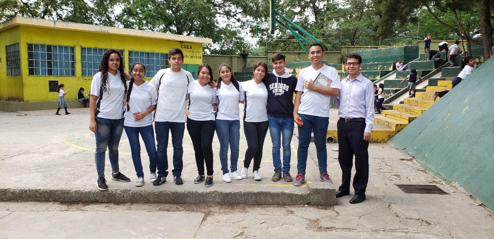
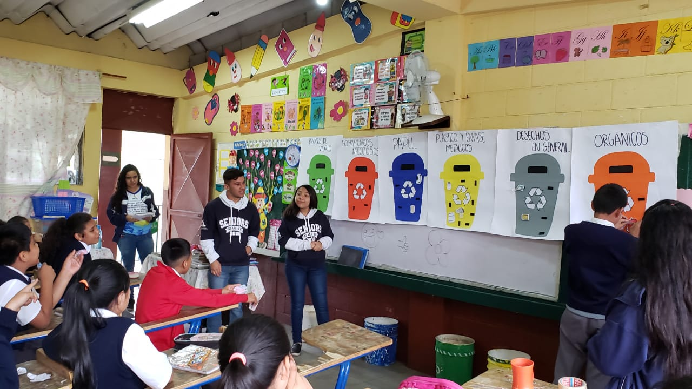
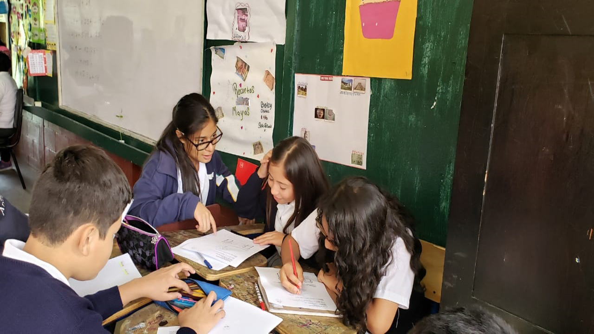
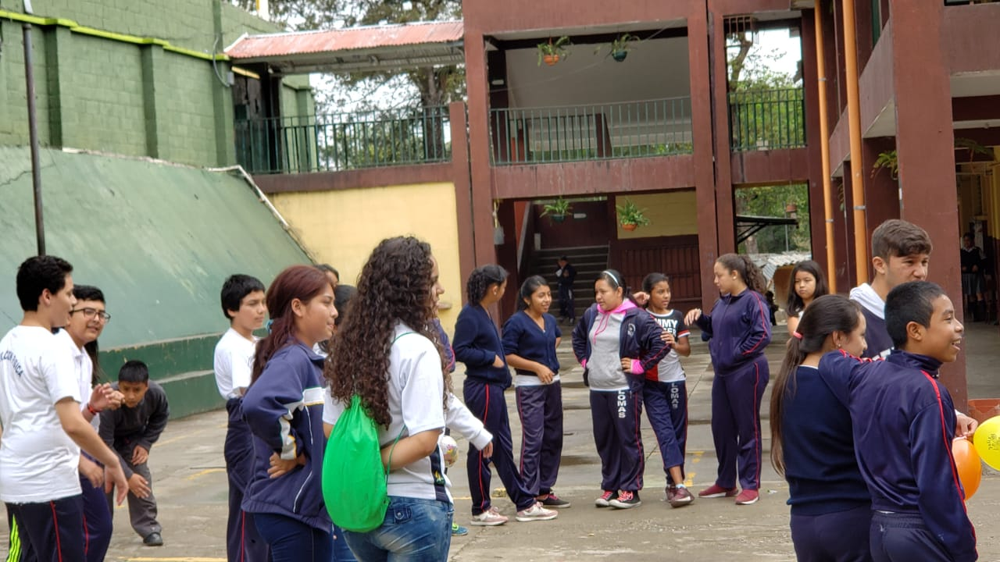

Comunidad Investigadora
¿Quiénes somos?
Nosotros somos el grupo #1 del Colegio Mixto Juan Bautista Alberdi
Los integrantes del grupo #1 son:
Wendy Daniela Loaisa Jolón (Coordinador)
Diego André Bran Mayén (Sub-Coordinador)
Cristian Fernando Laynez Bachez (Secretario)
Paula Ximena Valdez de León (Tesorera)
Gabriela Saraí Guzmán Roldan
Esdras Gaddiel Herrarte Rodríguez
Kimberly Dayana Luna Hernández
Silvia María Mejía Fernández

Objetivos
Objetivo General
Concientizar a los alumnos de Sexto Primaria de la Escuela Urbana Mixta #85 de Lomas
del norte sobre la importancia del desarrollo sostenible y el cuidado del medio ambiente.
Objetivos Especificos
• Promover información a los estudinate sobre la importancia del desarrollo sostenible
por medio de dinámicas de aprendizaje.
• Brindar a los estudiantes información sobre el desarrollo
sostenible por medio de charlas informativas.
• Realizar Actividades de recolección y transformación de desechos
para realizar de forma proactiva el desarrollo sostenible.

Metadología
Enfoque
● Enfoque cualitativo: Es el que se constituye en posibles elecciones
para enfrentar problemas de investigación. Son las mejores formas
construidas por la humanidad para investigar y generar conocimientos.
Método
Consiste en contemplar, examinar e investigar el comportamiento
de las sociedades con el fin de ilustrar su desarrollo.
Técnicas
Los métodos de recolección de datos cualitativos se enfocan principalmente
en obtener ideas, razonamientos y motivaciones, por lo que profundizan en
términos de investigación.
● Entrevistas Individuales: Es uno de los instrumentos de recopilación
de datos más utilizados para la investigación cualitativa, principalmente
por su enfoque personal. Las preguntas que se formulen deben ser en su
mayoría preguntas abiertas y espontáneas.

● Grupos Focales: Esto se lleva a cabo en un entorno de discusión grupal.
El grupo está limitado a 6-10 personas y se asigna un moderador para dirigir
la discusión en curso.

● Mantenimiento de registro: En este método de recolección de datos
podemos revisar libros y otros materiales de referencia, para recopilar
datos relevantes que puedan utilizarse en la investigación.

● Proceso de Observación: En este método de recopilación de datos
cualitativos, el investigador se introduce al entorno en el que se
encuentran sus encuestados, observa atentamente a los participantes y
toma notas.

● Estudios Longitudinales: Es un método de investigación observacional
que dura mucho tiempo.
El objetivo de este método de recopilación de datos es encontrar
correlaciones mediante un estudio empírico de sujetos con rasgos comunes.